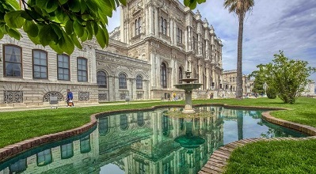
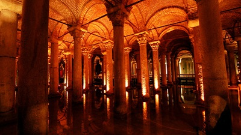

MÜZELER
İstanbul'un tarihine tanıklık edin
Dolmabahçe Sarayı

Osmanlı Devleti’nin 19. yüzyılda dönüşen kimliğinin sembol yapılarından en görkemlisi, Boğaz’ın zarif sarayı Dolmabahçe..
Yerebatan Sarnıcı

İstanbul'un görkemli tarihsel yapılarından birisi de Ayasofya’nın güneybatısında bulunan Bazilika Sarnıcı’dır. Bizans İmparatoru I. Justinianus (527-565) tarafından yaptırılan bu büyük yeraltı sarnıcı, suyun içinden yükselen ve sayısız gibi görülen mermer sütunlar sebebiyle halk arasında “Yerebatan Sarayı” olarak isimlendirilmiştir.Sarnıcın bulunduğu yerde daha önce bir Bazilika bulunduğundan, Bazilika Sarnıcı olarak da anılır.
Topkapı Sarayı

Topkapı Sarayı, Osmanlı Sultanlarının ikametgâhı, devletin yönetim ve eğitim merkezidir. İstanbul fatihi Sultan II. Mehmed tarafından 1460-1478 tarihleri arasında yaptırılmış olan ve zaman içerisinde bazı ilavelerin yapıldığı sarayda, Osmanlı padişahları ve Saray halkı 19'uncu yüzyıl ortalarına kadar ikamet etmiştir.